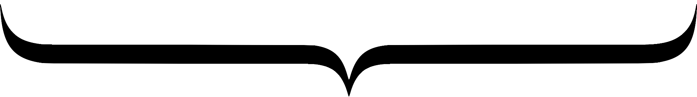

A pair of light rods that are programmed to change color depending on what angle they are held at and how close they are to each other. Both contain a Micro:bit, NeoPixels, and batteries and are intended to be used for long exposure photography.

 2019 Sonia Szeton | All Rights Reserved
2019 Sonia Szeton | All Rights Reserved